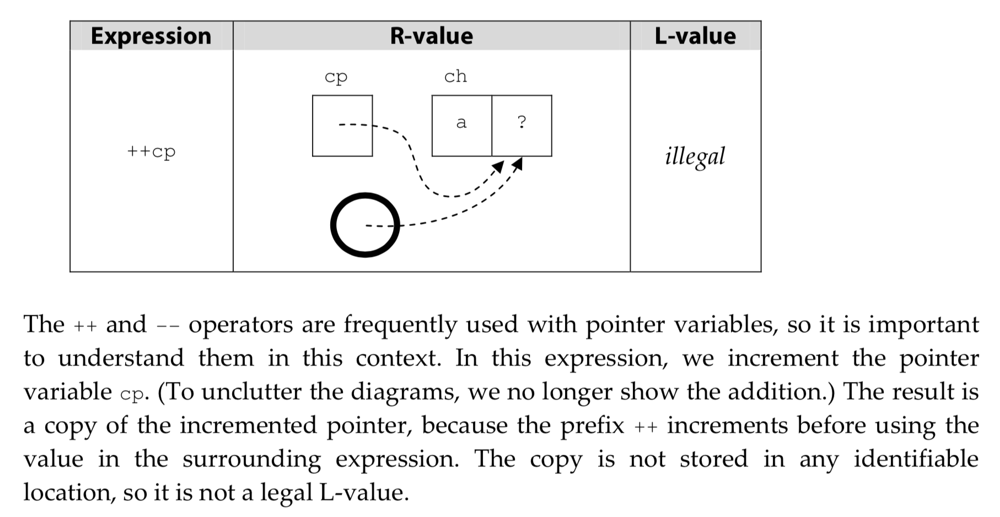
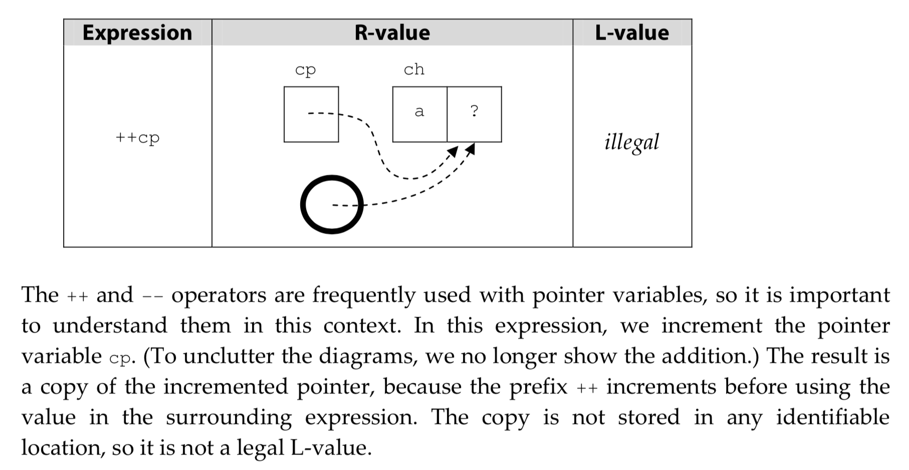
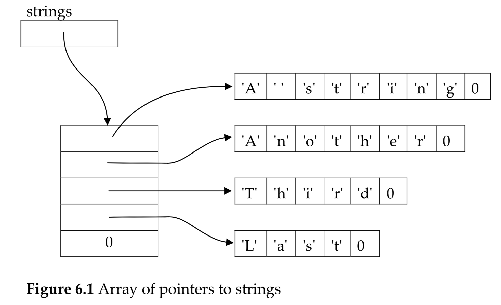

-
Memory and Addresses
computer memories = millions of bits that hold 1 or 0.
bits alone is not terribly useful, so bits are usually grouped together and treated as unit
on many modern machines, 1 byte contains 8 bits, which can store unsigned int from 0 - 255,
or signed int from -128 - 127.
each byte is identified by an address.
to store larger values, we take two or more bytes and treat them as if they were single unit.
many machines store integers in words, each composed of two or four bytes.
question: what is the advantage of 64 bit computers?
to read: Intel 64
to read: Why is it that the de facto standard for the smallest addressable unit of memory (byte) to be 8 bits?
-
Indirection Operator
uninitialized & illegal pointers:
int *a;
*a = 12;
uninitialized pointer variable points to unknown locations.
on some systems, indirection on uninitialized pointer causes general protection exception.
but it could be much more serious when the pointer accidentally contains a legal address.
so, initialize them before applying indirection!!!
the NULL pointer:
the standard defines a NULL pointer as a pointer value that points to nothing.
to make a pointer variable NULL, you assign it the value 0.
NULL is useful cause it gives you a way to specify that a particular pointer is not currently
pointing to anything at all. e.g. a function whose job is to search an array for a specific
value may return a pointer to the array element that was found. If no element in the array
contained the right value, a NULL pointer could be returned instead. This technique allows
the return value to convey two different pieces of information. First, was an element found?
Second, if an element was found, which one was it?
indirection to NULL
perform indirection to NULL is implementation dependent.
-
Pointer Constants
*100 = 25;
It looks like the statement assigns 25 to a, because a is the variable at location 100.
But not so! The statement is actually invalid because die literal 100 is of type integer,
and indirection can only be performed on expressions of type pointer. If you really want to
store 25 in location 100, you must use a cast.
*(int *)100 = 25;
The cast converts the value 100 from an ʺintegerʺ to a ʺpointer to an integer.ʺ It is legal
to apply indirection to this expression, so if a is stored in location 100, this statement
stores the value 25 in a. However, you will need this technique rarely, if ever! Why? As
mentioned earlier, you usually cannot predict where in memory the compiler will choose to
put any specific variable, so you donʹt know its address ahead of time
On some machines, communication with device controllers is accomplished by reading and writing
values at specific memory addresses. Instead of accessing memory, however, these operations
access the device controller interface. These locations, then, must be accessed via their
addresses, which are known in advance.
In the rare instances when they are required, they are generally written as integer literals
and converted to the proper type with a cast
-
Pointer Expressions

 

-
Examples
example to calculate string length (program 6.1):
/*
** Compute the length of a string.
*/
#include
size_t
strlen( char *string )
{
int length = 0;
/*
** Advance through the string, counting characters
** until the terminating NUL byte is reached.
*/
while( *string++ != '\0' )
length += 1;
return length;
}
Programs 6.2 and 6.3 add a level of indirection. They search a collection of strings for
a specific character value, but an array of pointers is used to keep track of the strings,
as illustrated in Figure 6.1:

program 6.2:
/*
** Given a pointer to a NULL-terminated list of pointers, search
** the strings in the list for a particular character.
*/
#include
#define TRUE 1
#define FALSE 0
int
find_char( char **strings, char value )
{
char *string; /* the string we're looking at */
/*
** For each string in the list ...
*/
while( ( string = *strings++ ) != NULL ){
/*
** Look at each character in the string to see if
** it is the one we want.
*/
while( *string != '\0' ){
if( *string++ == value )
return TRUE;
}
}
return FALSE;
}
the code:
while( ( string = *strings++ ) != NULL ){
does the following:
(1) it copies the pointer that strings currently points to into the variable string,
(2) it increments strings to point to the next value, and
(3) it tests whether string is NULL.
Program 6.3 performs the same function without making a copy of the pointer to each string:
As a side effect, however, this program destroys the array of pointers
/*
** Given a pointer to a NULL-terminated list of pointers, search
** the strings in the list for a particular character. This
** version destroys the pointers so it can only be used when
** the collection will be examined only once.
*/
#include
#include
#define TRUE 1
#define FALSE 0
int
find_char( char **strings, int value )
{
assert( strings != NULL );
/*
** For each string in the list ...
*/
while( *strings != NULL ){
/*
** Look at each character in the string to see if
** it is the one we want.
*/
while( **strings != '\0' ){
if( *(*strings)++ == value )
return TRUE;
}
strings++;
}
return FALSE;
}
-
Logical
logical operators = && and ||
a > 5 && a < 10 is perfectly fine. && has lower precedence.
it is the same as ( a > 5 ) && ( a < 10 )
procedure of evaluating the expressions in (expr1 && expr2) is called "short-circuited evaluation":
* left operand expr1 is always evaluated first.
* if the evaluation if true, then expr2 is evaluated.
* if the evaluation if false, then expr2 is never evaluated.
if (x >= 0 && x < MAX && array[ x ] == 0 )...
if subscript test passes, then array[ x ] is evaluated, and it is guaranteed to be correct.
-
Conditional
expression1 ? expression2 : expression3
it has very low precedence, for clarity sake, usually people put parentheses.
expr1 is evaluated first, if expr1 == true, expression2 is the value, and expr3 is not evalutated.
if expr1 == false, expr3 is the value, and expr2 is not evaluated.
in some conditions, conditional operator is clearer than if statements:
if ( a > 5 )
b[ 2 * c + d( e / 5 ) ] = 3;
else
b[ 2 * c + d( e / 5 ) ] = 20;
---->
b[ 2 * c + d( e / 5 ) ] = a > 5 ? 3 : 20;
-
Comma Operator
expr1, expr2, expr3, ...
the expressions are evaluated one by one, left to right
the value of the expression is the final expression in the list
the example below shows the usage of comma operator:
a = get_value();
count_value( a );
while( a > 0 ){
...
a = get_value();
count_value( a );
}
with the comma operator, you can rewrite the loop as:
while( a = get_value(), count_value( a ), a > 0 ){
}
you can also use an embedded assignment like:
while( count_value( a = get_value() ), a > 0 ){
...
}
-
Subscript, Function Call, and Structure Member
subscript operator is a pair of brackets. A subscript takes two operands: an array name and an index value
array[ subscript ] is equal to *( array + ( subscript ) )
function call operator takes one or more operands:
- the name of the function
- arguments to pass to the function
. and -> operator are used to access members of a structure.
-
Boolean Values
...0 is false, any nonzero value is true
if a variable is supposed to contain a boolean value, always set it to either 0 or 1:
positive_cash_flow = cash_balance >= 0;
if ( positive_cash_flow )
...
-
L-values and R-values
L-value = something that can appear on the left side of an equal sign
R-value = something that can appear on the right side of an equal sign
a = b + 5;
a is L-value because it identifies a place where a result can be stored.
b + 5 is an R-value because it designates a value
what about this?
b + 5 = a;
a, which was used as L-value, can be used as R-value cause every place contains a value.
however, b + 5 cannot be used as L-value cause it does not identify a place.
sounds like expression may not be a L-value, but look at subscript:
int a[30];
a[ b + 10 ] = 0;
and indirection *:
int a, *pi;
pi = &a;
*pi = 20;
both subscript and indirection specify a locatin.
different operators produce differnt L / R value as result.
the only ones that produce L-value: subscript, ".", "->", and indirection.
-
Expression Evaluation
The order of expression evaluation is determined partially by the precedence and associativity
of the operators it contains. Also, some of the expressionʹs operands may need to be converted
to other types during the evaluation
-
Implicit Type Conversions
arithmetic in C is always performed with at least the precision of the default integer type
character and short integer operands in an expression are converted to integers before being
used in the expression. These conversions are called integral promotions:
char a, b, c;
a = b + c;
b and c are promoted to integers then added. result is truncated to fit into a.
-
Arithmetic Conversions
Op on values of different types cannot proceed till one of the operands is converted to the type of other.
=================
long double
double
float
unsigned long int
long int
unsigned int
int
=================
The operand whose type is lower in the list is converted to the other operand’s type.
the code below looks perfectly fine:
int a = 5000;
int b = 25;
long c = a * b;
code works fine on machines with 32‐bit integers, but the multiplication overflows on machines with 16‐bit integers,
cause, implicit conversion brings the result back to 16-bit integers.
the solution is to convert one (or both) value to a long before multiplication:
long c = (long)a * b;
It is possible to lose precision when converting an integer to a float. Floating values are only required
to have six decimal digits of precision; if an integer that is longer than six digits is assigned to a float,
the result may be only an approximation of the integer value.
When a float is converted to an integer, the fractional part is discarded (it is not rounded). If the number is too large
to fit in an integer, the result is undefined.
-
Properties of Operators
precedence, associativity of operators controls how expressions are evaluated.
eval of two adjacent operators is determined by their precedence. if they have same precedence, the order
is determined by their associativity. otherwise, the compiler is free to evaluate expressions in any
order that does not violate the order of eval imposed by (), or comma, &&, || or ?: operators.
test.c:8:10: warning: multiple unsequenced modifications to 'aa' [-Wunsequenced]
aa = aa-- - --aa;